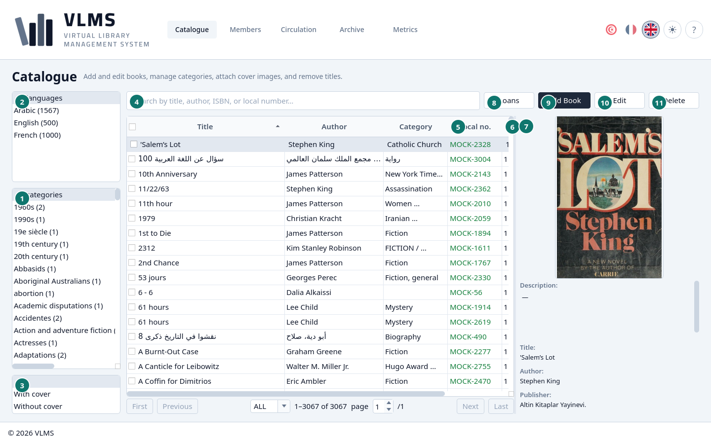
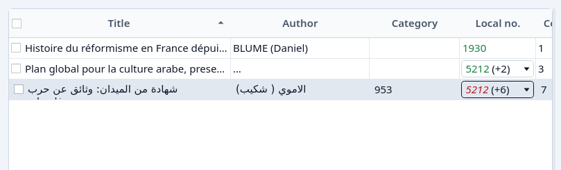
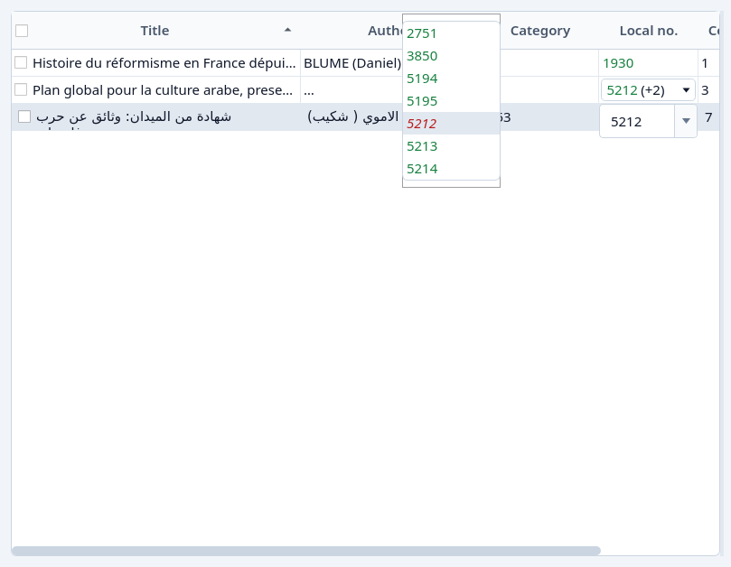
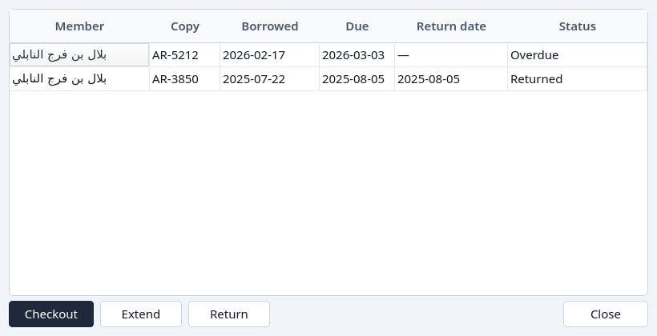

Catalogue
Find a title, read its copies, and open its loans.
The Catalogue is the live list of titles. Archived titles are on the Archive screen, under Books.


- Categories. All categories leaves every category in the list. Pick one or more to narrow it.
- Languages. All languages, or Arabic, French, and any other language the catalogue holds.
- Cover. All, With cover, or Without cover.
- Search, by title, author, ISBN, or local number.
- Local no. The number the cell is speaking for. See Local numbers.
- Copies and Available. Copies is every live copy. Available is the ones still on the shelf.
- The details of the highlighted title: cover, description, and the bibliographic fields.
- Loans
- Add Book
- Edit
- Delete
Search
Type in the search box. The list narrows as you type. A local number that matches a copy exactly is preferred. A prefix of a number is used only when no copy has that number exactly, so a year such as a title still finds the title.


The local-number column
One copy shows its number. Several copies show the number and how many further copies the title has. Click the cell to open the drop-down. Each number is green on the shelf, or red and italic when that copy is out.


Choosing a number marks it in the closed cell. The copies stay in their original order, and the choice lasts until the list is loaded again.

The colour rules are in Local numbers.
Loans
Loans follows the highlighted title. It opens even when the title has never been borrowed, and it offers Checkout from there. The list is every loan of every copy the title has ever had, including copies and loans that have since been archived.


Close leaves the dialog. Lending from here is Lend a book. Adding a title is Add a book. Removing one is Remove.